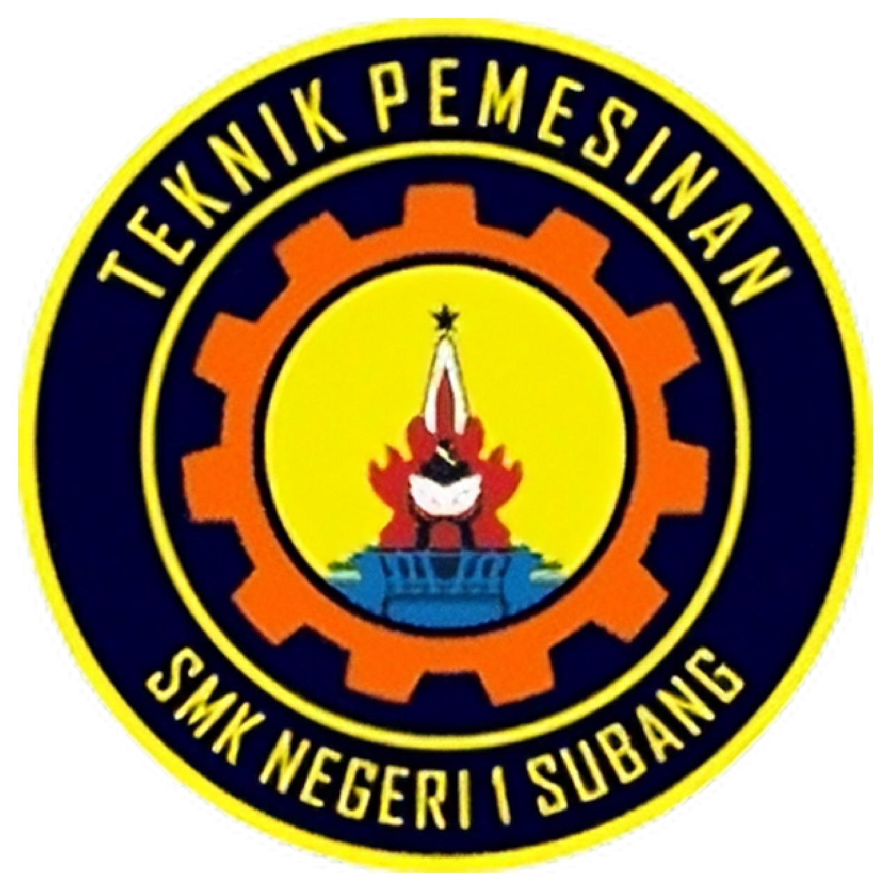

Teknik mesin
Pengantar
Teknik Mesin merupakan kompetensi keahlian pada rumpun program keahlian teknik mesin bidang keahlian teknologi rekayasa yang melaksanakan program pendidikan dan pelatihan memproduksi produk-produk teknik berupa komponen-komponen mesin, komponen otomotif maupun peralatan lainnya menggunakan mesin-mesin produksi.
Teknik Pemesinan SMK Negeri 1 Subang terbentuk pada tanggal 22 Mei 2015 berdasarkan Surat Keputusan Kepala Dinas Pendidikan Kabupaten Subang tentang Pemberian Izin Program Kompetensi Keahlian Teknik Pemesinan SMK Negeri 1 Subang, dengan Nomor SK : 421.2 / 60 – Disdik, Tanggal SK : 22 Mei 2015.
Kompetensi Dasar
- Gambar Teknik Mesin
- Pekerjaan Dasar Teknik Mesin
- Dasar Perancangan Teknik Mesin
- Gambar Teknik Manufaktur
- Teknik Pemesinan Bubut
- Teknik Pemesinan Frais
- Teknik Pemesinan Gerinda
- Teknik Pemesinan NC/CNC dan CAM
- Produk Kreatif dan Kewirausahaan.
Tujuan Pembelajaran
Tujuan Kompetensi Keahlian Teknik Pemesinan secara umum mengacu pada isi Undang-Undang Sistem Pendidikan Nasional (UU SPN) pasal 3 mengenai Tujuan
Pendidikan Nasional dan penjelasan pasal 15 yang menyebutkan bahwa pendidikan kejuruan merupakan pendidikan menengah yang mempersiapkan peserta didik terutama untuk bekerja dalam bidang tertentu.
Secara khusus tujuan Kompetensi Keahlian Teknik Pemesinan adalah membekali peserta didik dengan keterampilan, pengetahuan dan sikap agar kompeten dalam:
- Bekerja baik secara mandiri atau mengisi lowongan pekerjaan yang ada di dunia usaha dan dunia industri
sebagai tenaga kerja tingkat menengah dalam bidang Teknik Pemesinan. - Memilih karir, berkompetisi, dan mengembangkan sikap profesional dalam bidang Teknik Pemesinan.
- Memiliki kompetensi sesuai jenjang dalam bidang Teknik Pemesinan
Tenaga Pengajar
- Agus Wahyu, S.Pd
- Mas Achmad Yusuf Wibisono, S.T
- Johan Suhendi, S.T
- Rahmanto, SIsep.T
- Hari Suprayoga, S.T
- Keresna Bayu Wijaya K. S.Pd
- Ajat Sutiawan, S.Pd
- Wildan Firmansyah, S.T